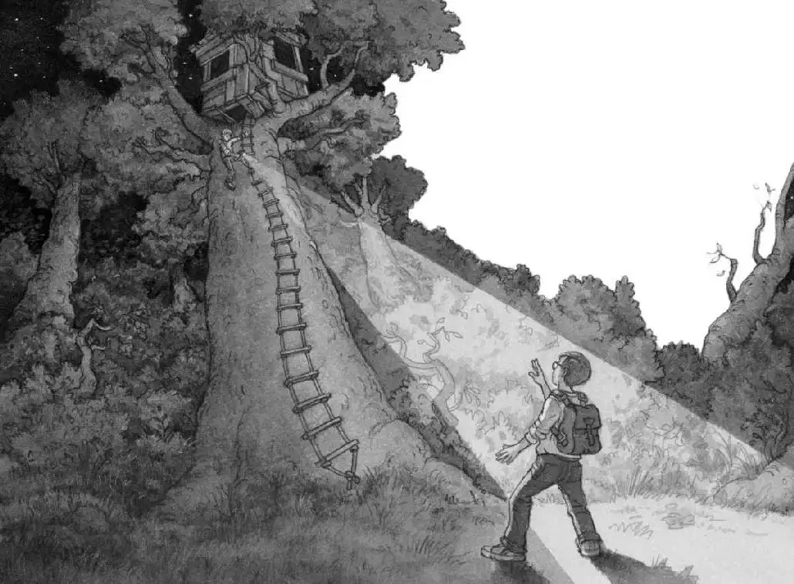

Jack couldn’t sleep.
He put his glasses on. He looked at the clock. It was five-thirty.
Too early to get up.
Yesterday so many strange things had happened. Now he was trying to figure them out.
He turned on the light. He picked up his notebook. He looked at the list he’d made before going to bed.
found tree house in woods
found lots of books in it
pointed to Pteranodon picture in book
made a wish
went to time of dinosaurs
pointed to a picture of Frog Creek woods
made a wish
came home to Frog Creek
Jack pushed his glasses into place. Who was going to believe any of this?
His mom wouldn’t believe it. Neither would his dad or his third-grade teacher, Ms. Watkins. Only his seven-year-old sister, Annie, understood. She’d gone with him to the time of the dinosaurs.
“Can’t you sleep?”
Annie was standing in his doorway.
“Nope,” said Jack.
“Me neither,” said Annie. “What are you doing?”
She walked over to Jack and looked at his notebook. She read the list.
“Aren’t you going to write about the gold medal?” she asked.
“You mean the gold medallion,” said Jack.
He picked up his pencil and wrote:
found this in dinosaur time
“Aren’t you going to put the letter M on the medal?” said Annie.
“Medallion,” said Jack. “Not medal.”
He added an M:
“Aren’t you going to write about the magic person?” said Annie.
“We don’t know for sure if there is a magic person,” said Jack.
“Well, someone built the tree house in the woods, and someone put the books in it. Someone lost a gold medal in dinosaur time,” said Annie.
“Medallion!” said Jack for the third time. “And I’m just writing the facts. The stuff we know for sure.”
“Let’s go back to the tree house right now,” said Annie, “and find out if the magic person is a fact.”
“Are you nuts?” said Jack. “The sun’s not even up yet.”
“Come on,” said Annie. “Maybe we can catch them sleeping.”
“I don’t think we should go there,” said Jack. He was worried. What if the “magic person” was mean? What if he or she didn’t want kids to know about the tree house?
“Well, I’m going,” said Annie.
Jack looked out his window at the dark gray sky. It was almost dawn.
He sighed. “Okay. Go get dressed. I’ll meet you at the back door. Be quiet.”
“Yay!” whispered Annie. She tiptoed away as quietly as a mouse.
Jack put on jeans, a warm sweatshirt, and sneakers. He tossed his notebook and pencil in his backpack.
He crept downstairs.
Annie was waiting by the back door. She shined a flashlight in Jack’s face. “Ta-da! A magic wand!” she said.
“Shhh! Don’t wake up Mom and Dad,” whispered Jack. “And turn that flashlight off. We don’t want anyone to see us.”
Annie nodded and turned the flashlight off. Then she clipped it onto her belt.
Jack and Annie slipped out the door into the cool early-morning air. Crickets were chirping. The dog next door barked.
“Quiet, Henry!” whispered Annie.
Henry stopped barking. Animals always seemed to do what Annie said.
“Let’s run!” said Jack.
Jack and Annie dashed across the dark, wet lawn and didn’t stop until they reached the Frog Creek woods.
“We need the flashlight now,” said Jack.
Annie took it off her belt and switched it on.
Step by step, she and Jack walked between the trees. Jack held his breath. The dark woods were a little scary.
“Gotcha!” said Annie, shining the flashlight in Jack’s face.
Jack jumped back. Then he frowned.
“Cut it out!” he said.
“I scared you,” said Annie.
Jack glared at her.
“Stop pretending!” he whispered. “This is serious.”
“Okay, okay.”
Annie shined her flashlight into the tops of the trees.
“Now what are you doing?” said Jack.
“Looking for the tree house!”
The light stopped moving.
The mysterious tree house sat high in the branches of the tallest tree in the woods.
Annie shined her light down the long rope ladder.

“I’m going up,” she said. Still holding the flashlight, she began to climb.
“Wait!” Jack called.
What if someone was in the tree house?
“Annie! Come back!”
But Annie was gone. The light had disappeared.
Jack was alone in the dark.